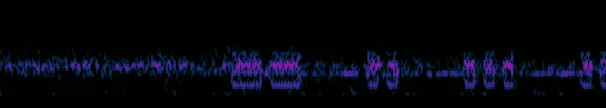

A “Distress Call” signal source can be found in the HR 1185 system, orbiting body A 1.
The source of the distress call is the wreckage of a Imperial Navy fleet consisting of a Majestic-class Interdictor and its escorts, including two Corvettes, destroyed by weapons consistent with Thargoid attacks, leaving green hull scarring and some kind of green gas throughout the area.
The Interdictor contains two Private Data Beacons, each of which provide a Thargoid Ship Signature when scanned.
There is also a sped up Morse transmission from the Interdictor, that can be heard at the near the command centre of the damaged ship. The transmission repeats approximately every 5 minutes.
To decode this transmission, first view as a spectrogram then slow down the transmission to approximately 10% of it’s original speed. Something that looks like Morse Code should now appear, and be able to be decoded.

When decoded this transmission reads:
MISSION FAILED.
UNAUTHORISED DATA TRANSFER COMPLETE.
WEAPONS INEFFECTIVE ON TARGET.
UNKNOWN CONTAMINANT DETECTED IN LIFE SUPPORT.
FULL SYSTEM FAILURE IN 5, 4, 3…..
Thanks to Sileo for the Morse decode